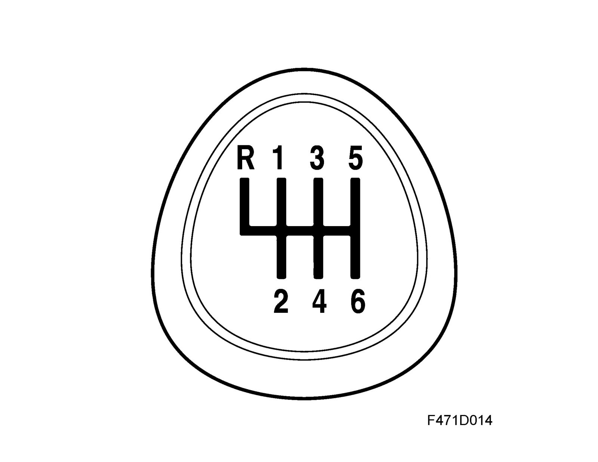
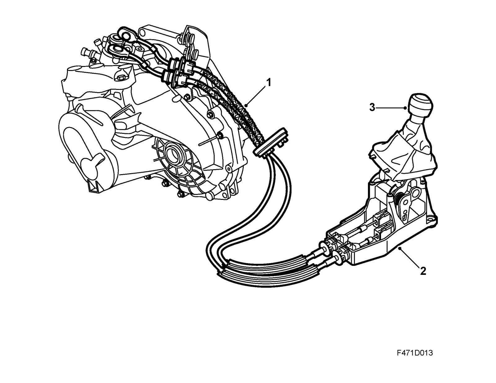
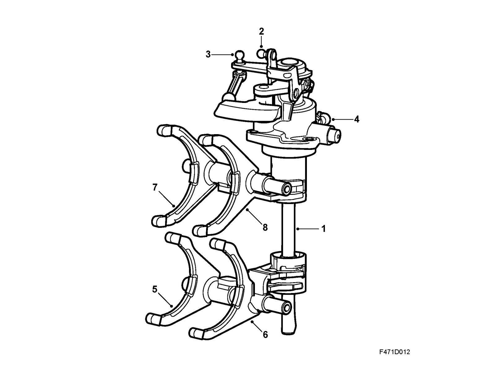
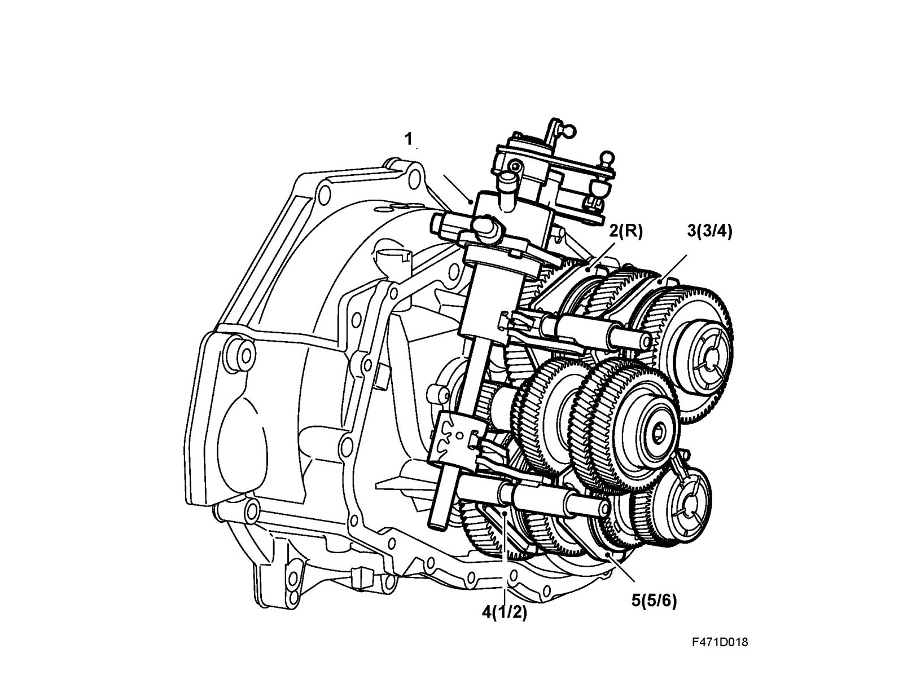

Shifter M/T: Description and Operation
System overview selector leverA cable and lever arrangement between the selector mechanism in the gearbox and the gear lever transfers torsional force and transverse force from the gear lever to the selector shaft.

The shifting pattern is indicated by the diagram on the gear lever knob.

1. Cable assembly
2. Gear lever housing
3. Gear lever

1. Selector shaft
2. Gear selector arm, push and pull
3. Gear selector arm, turn
4. Reversing light switch
5. Gear selector fork 5/6
6. Gear selector fork 1/2
7. Gear selector fork 3/4
8. Gear selector fork R
Both cables are attached to the levers by ball joints and run through the bulkhead via a rubber grommet to the gear lever housing. This system prevents any movement and vibrations from the drive unit being propagated to the gear lever and body.

1. Selector mechanism
2. (2-5) Gear selector forks
To engage reverse (R) the catch under the gear knob must be lifted. Due to the spring load in the gear select mechanism, when in neutral the gear lever strives to assume a balanced position in line with 3rd and 4th gears. This allows the driver to easily orient him or herself with the shift pattern and avoid incorrect gear changes.